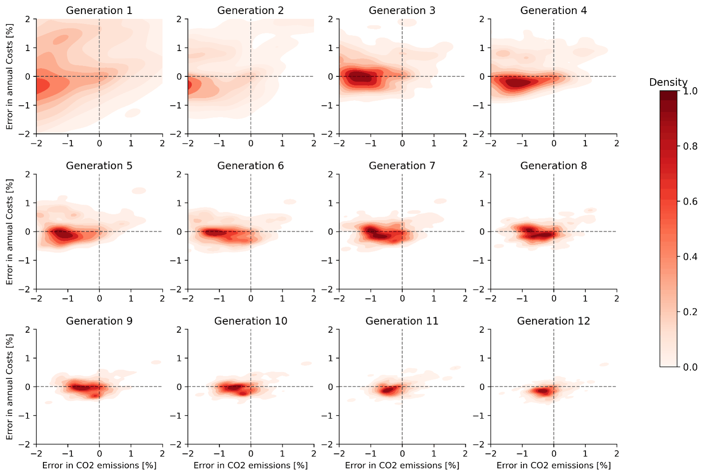

Research explained · Energy, 2024
A machine learning surrogate model makes EnergyPLAN optimisation 64% faster
Optimising the energy system of a whole country means simulating tens of thousands of scenarios, and each simulation takes time. We trained a neural network to imitate EnergyPLAN and used it inside our optimisation model EPLANopt. For Italy in 2050, the computing time dropped by 64% and the optimal scenarios stayed almost identical.

Why energy system optimisation is slow
Our model EPLANopt couples EnergyPLAN, the energy system simulation tool developed at Aalborg University, with a multi-objective evolutionary algorithm. The algorithm proposes an energy system, for example a certain amount of wind, solar, batteries and heat pumps. EnergyPLAN simulates it hour by hour for a full year, across electricity, heating, transport and industry, and returns two numbers: total annual costs and CO2 emissions. The algorithm keeps the best candidates, mixes them and tries again.
For the Italian case each generation has 200 candidate scenarios and the reference run uses 200 generations. That is 40,000 EnergyPLAN simulations for a single optimisation. If you want to repeat it under different fuel prices or technology costs, the hours add up fast. Long computing time is one of the practical limits of bottom-up energy system models: it makes uncertainty analysis expensive, so it is often skipped.
The idea: let a neural network stand in for EnergyPLAN
A surrogate model is a fast approximation of a slow model. We call our approach a hybrid optimisation model, and it works in three phases:
- The optimisation starts normally with EnergyPLAN. The scenarios simulated in these first generations become the training data.
- A machine learning model learns from them and replaces EnergyPLAN for the next 200 generations. Each prediction takes a fraction of a second.
- For the last generations the algorithm switches back to EnergyPLAN, so the final optimal scenarios are calculated with the full model.
This leaves three questions. Which machine learning model should we use? How much training data does it need? And how many final generations must go back through EnergyPLAN to keep the results accurate?
Which machine learning model works best?
We tested linear regression, a decision tree, a random forest and neural networks (scikit-learn's MLP regressor) with hidden layers of 50, 100, 200 and 500 nodes, each trained five times. Linear regression levelled off around 73% accuracy, the decision tree around 82% and the random forest around 94%. All neural networks went above 99%, and the one with 500 nodes got there fastest.
The figure above shows that network learning. After one or two generations of training data its errors spread up to two percent in every direction. After 10 generations, or 2,000 scenarios, the accuracy stays above 99% in all five runs. That is the training set size we chose.
How much time does the surrogate save?
We then compared the optimal scenarios (the Pareto front of costs against emissions) found by the hybrid model with the ones found by EPLANopt alone, using the generational distance indicator. The time saving includes the time to generate the training data and train the network.
| Final generations with EnergyPLAN | Computing time saved | Distance from reference front |
|---|---|---|
| 5 | 74% | 0.000891 |
| 10 | 64% | 0.000551 |
| 20 | 44% | 0.000352 |
| Two more full EPLANopt runs (no surrogate) | none | 0.000362 (average) |
Evolutionary algorithms are stochastic, so even two more full EPLANopt runs without the surrogate do not land on exactly the reference front. With 20 final generations the hybrid model is as close to the reference as a repeated full run, at 44% less computing time. With 10 final generations it is almost as close and saves 64%, which is the setting we recommend. The optimal levels of onshore wind, utility-scale solar, building efficiency and heat pumps were nearly identical in all cases.
Using the saved time: what if gas prices change?
Between 2018 and 2023 the natural gas price in Italy ranged from 19 to 121 €/MWh. To see how this changes the optimal energy mix, we trained a more general surrogate on random EnergyPLAN simulations, with the gas price as an extra input. This let us run eight full optimisations with gas prices from 18 to 180 €/MWh.
- As gas gets more expensive, the range of optimal solutions narrows. Scenarios that keep a lot of gas and cut few emissions stop being cost-effective.
- Onshore wind and utility-scale solar, the cheapest sources per unit of electricity, appear in almost every optimal scenario and grow with the gas price.
- Offshore wind and rooftop solar only enter the optimal scenarios at high levels of CO2 reduction, because they cost more.
- At low gas prices, battery capacity and building efficiency grow step by step with emission cuts. At high gas prices both sit close to their upper limits.
- The share of heat pumps stays stable whatever the gas price.
Where this work led
This study showed that a neural network can reproduce a national, hourly, sector-coupled EnergyPLAN model with more than 99% accuracy. In a follow-up study we used a deep learning surrogate to go one step further: explaining which clean energy technologies work best together. The code is available on GitHub as EPLANoptML.
Frequently asked questions
What is a surrogate model in energy system optimisation?
A surrogate model is a fast approximation of a slow simulation. A machine learning model is trained on scenarios already calculated with the energy system model, here EnergyPLAN, and then predicts the costs and CO2 emissions of new scenarios almost instantly.
Which machine learning model works best as a surrogate for EnergyPLAN?
In our tests a neural network (MLP regressor) with a hidden layer of 500 nodes performed best, passing 99% accuracy after 10 generations of training data. Linear regression stayed around 73%, a decision tree around 82% and a random forest around 94%.
How much computing time does the surrogate model save?
Between 44% and 74%, depending on how many final generations are run with EnergyPLAN to check the results. With 10 final generations the time saving is 64% and the accuracy is close to a full EPLANopt run without the surrogate.